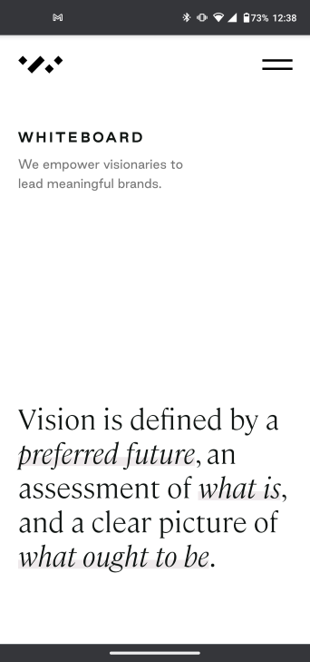

PARC: Proximity
Goodreads
goodreads.comGoodreads is a classic example of proximity where each genre of book will be grouped in a section so that viewers know that the books are related to each other.
PARC: Contrast
Whiteboard
Whiteboard.isThis page exemplifies excellent contrast not only between the background and foreground but through its ability to highlight vibrant pictures as well as balance the colors of the text and page as a whole.The lack of colors gives viewers the ability to relax and enjoy the content.
White space & clean design
Whiteboard
Whiteboard.is The whitespace on this page allows you to focus on the words on this site, which is what drives the content. The words are the most important and engaging thing and the design is constructed around it. The extra whitespace highlights and prevents extra distraction that could possibly result if more colors were added and filled up the extra space.